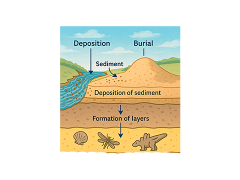
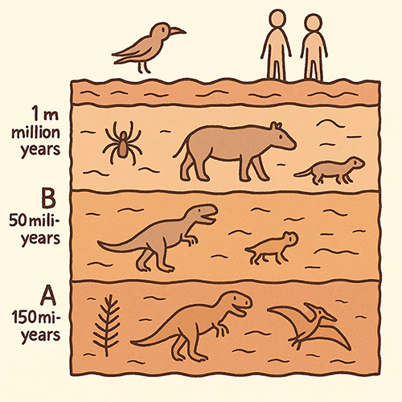

Introdução
Neste artigo, quero contar um pouco sobre os motivos que me levaram a deixar o cristianismo. E antes de mais nada, acho importante deixar claro: eu já fui cristão. Me converti aos 13 anos, movido, na época, por argumentos que me pareciam muito convincentes — especialmente a argumentação cosmológica do William Lane Craig.
Com o tempo, fui me aprofundando. Estudei a base filosófica por trás da fé, mergulhei em pensadores como Aristóteles e nas famosas "Vias" de Tomás de Aquino. Ao longo dessa caminhada, transitei entre diferentes tradições cristãs: fui católico, depois protestante, explorei várias correntes dentro do cristianismo e cheguei a estudar teologia reformada com bastante dedicação. Inclusive, me aventurei no estudo do grego koiné, a língua original do Novo Testamento.
Estou contando tudo isso não para parecer mais preparado, mas para mostrar que falo a partir de uma vivência real — de dentro. Não sou alguém que está olhando de fora, tentando criticar algo que não conhece. Pelo contrário: estive envolvido profundamente, e é justamente por isso que essa mudança de perspectiva foi tão significativa pra mim.
Antes de continuar, acho importante esclarecer algumas coisas. Toda a minha argumentação parte de uma premissa básica: a de que a Bíblia é a Palavra de Deus e, por isso, é infalível. Essa é uma ideia amplamente aceita tanto por católicos quanto por protestantes — mesmo que cada tradição tenha suas próprias nuances. No geral, a Bíblia é vista como a autoridade máxima dentro da fé cristã.
É claro que existem exceções, como em algumas seitas neopentecostais, que acabam adotando outras fontes de autoridade na prática. Mas, de forma geral, a centralidade das Escrituras é um ponto comum entre as principais vertentes do cristianismo.
Aliás, na época em que eu ainda era cristão, escrevi um artigo justamente sobre isso — defendendo o princípio do Sola Scriptura e argumentando contra a ideia de que poderia haver alguma autoridade maior que a própria Bíblia. Se tiver interesse, deixo o link aqui:
Clique aqui
Indice
Fósseis e a morte
Adão Histórico
Noé e o Dilúvio
Dilúvio é uma copia ?
Deus existe?
Conclusão
Fósseis e a morte
Quero começar por um ponto que, na época, me deixou com muitas dúvidas. Era um argumento que me parecia forte, mas que hoje, olhando com mais calma, vejo que não se sustenta tanto assim. Minha ideia aqui é introduzir esse tema de forma leve, sem pressa, antes de entrar nos pontos que realmente fazem a diferença.
Mas, antes de seguir em frente, preciso explicar alguns conceitos que são essenciais pra entender o restante do que vou dizer. Vou falar sobre coisas como camadas de rocha, fósseis e os métodos usados pra datar esses elementos. Pode parecer técnico à primeira vista, mas esses temas são fundamentais — sem eles, fica difícil acompanhar os próximos argumentos com clareza.
Então, se puder, não pule essa parte. Pode parecer introdutória, mas ela dá o pano de fundo necessário pra tudo que vem depois.
A paleontologia, que é um ramo da geologia, nos dá acesso a milhões de fósseis — de animais, dinossauros e até de seres humanos. E uma das coisas mais fascinantes que conseguimos fazer com esses fósseis é descobrir a idade deles.
Pra isso, usamos métodos de datação bastante confiáveis. Um exemplo é o carbono-14, que funciona bem para fósseis mais “recentes” — com até 50 mil anos. Já para fósseis muito mais antigos, usamos outras técnicas, como o urânio-chumbo. E não para por aí: existem vários outros métodos que ajudam a confirmar e refinar essas estimativas.
Claro, nenhum processo é perfeito. Se, por algum motivo, uma rocha perde átomos — tanto os chamados "pais" quanto os "filhos", que são parte do processo de decaimento radioativo — a datação pode acabar dando um resultado errado: muito mais nova ou muito mais antiga do que realmente é. Por isso, os cientistas costumam aplicar diferentes métodos em paralelo. Quando os resultados batem entre si, temos uma margem muito maior de confiança de que aquela data está, de fato, correta.
Mas a datação não é a única forma de entender a ordem dos acontecimentos no passado da Terra. Existe também um outro conceito muito importante: o das camadas de rochas.
Sei que, dito assim, pode parecer meio vago ou até um pouco abstrato. Então deixa eu explicar melhor como esse processo funciona na prática — e por que ele é tão útil pra gente montar a cronologia de fósseis e formações rochosas.
Imagine uma rocha atual. Ela sofre a ação do vento, da água e de colisões. Com o tempo, esses processos desgastam a rocha e liberam resíduos, que são deslocados pelos rios. Esses resíduos se acumulam até formar um depósito, que, com o passar dos anos, vai se solidificar e se transformar em uma camada de rocha. O interessante aqui é que qualquer fóssil ou material que estivesse na mesma camada vai ficar preso ali, junto com os resíduos. E o processo se repete: novas camadas de rocha vão se formar por cima das anteriores, criando uma espécie de "história" que pode ser lida.
Portanto, mesmo que eu não saiba a data exata de um fóssil ou de uma rocha, posso identificar qual camada foi formada primeiro, e a partir daí construir uma linha do tempo. Ao mesmo tempo, consigo analisar os fósseis dos animais que viveram primeiro e os que surgiram em seguida, criando uma ordem cronológica dos eventos. Abaixo, vou colocar uma figura para ilustrar esse processo.

Obs: caso a imagem não esteja aparecendo, ou quer ver a imagem completa clique aqui
Dito isso, conseguimos saber quais animais morreram primeiro, e é aqui que entra o primeiro ponto (lembrando que este é apenas um ponto introdutório, e não um argumento definitivo). Nas camadas mais profundas, encontramos fósseis de vários animais, especialmente dinossauros, mas nenhum ser humano. Passam-se centenas de milhões de anos sem que sequer apareça um fóssil humano. Os humanos só começam a surgir em camadas mais recentes, com fósseis que datam de, no máximo, 300 mil anos — e não de milhões de anos.
Mas, mesmo que a gente esqueça por um momento as datas precisas, que são determinadas pelos métodos de datação, ainda podemos tirar uma conclusão importante: sabemos, pelo menos, qual animal morreu primeiro em relação aos outros. Isso porque as camadas estão diretamente ligadas à linha do tempo de quais fósseis apareceram antes. Ou seja, o fato de um fóssil estar em uma camada mais profunda significa que ele é mais antigo do que o de uma camada superior. Vou colocar uma imagem para ilustrar melhor esse processo.

Obs: caso a imagem não esteja aparecendo, ou quer ver a imagem completa clique aqui
Dito isso, a gente sabe que houve morte antes da Queda — o momento em que Adão e Eva pecaram contra Deus. Isso porque animais já morriam antes de existirem registros de morte humana. Temos milhões de fósseis de animais diversos em camadas de rochas bem antigas, mas nenhum fóssil humano nessas mesmas camadas. Ou seja, antes da Queda já havia morte de animais.
Mas, pra ser justo, esse argumento não é tão forte assim, porque a Bíblia não diz necessariamente que os animais não podiam morrer antes da Queda — o foco sempre foi que a morte dos seres humanos veio por causa do pecado.
Então por que eu falei disso? Porque isso me permite introduzir vários conceitos geológicos que vão ser importantes mais pra frente. Além disso, esse contexto já ajuda a lidar com alguns fatos que a gente precisa ter em mente pra discutir o restante.
Agora sim, vamos começar a falar dos problemas reais.
Adão Histórico
Eu não sabia muito bem por onde começar, porque é como se fossem várias partes de um quadro que, sim, até funcionam sozinhas para apontar problemas na Bíblia, mas quando juntamos, elas formam uma visão mais linear de uma linha do tempo.
Então vamos tentar entender tudo isso dentro de uma linha do tempo. Comecemos falando de Adão e Eva. Bom, sim, eu poderia começar falando sobre evolução e explicar, por exemplo, por que o ser humano não veio do pó (apesar de muitos hebraístas argumentarem que essa é uma expressão sobre origem não divina).
Poderia citar vários pontos que mostram por que não dá pra negar a evolução. Um exemplo é a genética: o DNA humano é 98% idêntico ao do chimpanzé. Temos também genes vestigiais, como o da síntese de vitamina C, que é útil em outros mamíferos mas inativo em nós.
E, claro, ninguém sério acredita que viemos do macaco — o que se diz é que tivemos um ancestral em comum. Outro ponto é a anatomia: os braços humanos têm a mesma base óssea que as asas dos morcegos e as nadadeiras dos golfinhos (isso se chama homologia). A estrutura óssea entre chimpanzés, Homo sapiens e neandertais também é extremamente parecida, com mudanças graduais ao longo do tempo, o que é comprovado por fósseis.
Além disso, tem a embriologia. Durante o desenvolvimento, os embriões humanos chegam a formar fendas branquiais (como os peixes) e uma cauda. Tanto as fendas quanto a cauda são reabsorvidas antes do nascimento, mas, em alguns casos, por erro no processo, bebês nascem com vestígios dessas estruturas, como partes das fendas ou até uma "cauda".


Obs: caso a imagem não esteja aparecendo, ou quer ver a imagem completa clique aqui
Mas não é por esse caminho que quero seguir. Vamos para algo mais concreto e, agora, seguindo a lógica bíblica.
Basicamente, temos motivos para acreditar que Adão foi o primeiro homem, já que o Novo Testamento reforça esse ponto. Por exemplo, na genealogia de Jesus, são citados vários nomes até chegar em Adão — ou seja, ele é tratado como uma pessoa real, parte da linhagem.
Além disso, existem passagens ainda mais diretas no Novo Testamento sobre esse assunto. Como os exemplos abaixo:
"De um só fez ele todos os povos, para que povoassem toda a terra, tendo determinado os tempos anteriormente estabelecidos e os lugares exatos em que deveriam habitar."
"Assim está escrito: "O primeiro homem, Adão, tornou-se um ser vivente"; o último Adão, espírito vivificante.
Não foi o espiritual que veio antes, mas o natural; depois dele, o espiritual.
O primeiro homem era do pó da terra; o segundo homem, do céu.
Os que são da terra são semelhantes ao homem terreno; os que são do céu, ao homem celestial.
Assim como tivemos a imagem do homem terreno, teremos também a imagem do homem celestial."
Além disso, em vários momentos o Novo Testamento faz teologia se baseando na historicidade de Gênesis — e em pontos bem específicos, deixando claro quais são.
Um exemplo é quando o apóstolo Paulo fala sobre as funções pastorais. Ele diz que a mulher não pode ser pastora, apenas o homem, e também que, nas reuniões dos fiéis (ou seja, no culto), a instrução deve vir só dos homens. A base que ele dá pra isso é o relato de Gênesis: ele afirma que Eva veio de Adão, e não o contrário. E ainda reforça dizendo que foi Eva quem foi enganada pela serpente, não Adão.
Ou seja, ele usa esses pontos do Gênesis e constrói teologia em cima deles, tratando esses acontecimentos como históricos, dizendo “pois assim foi”.
"Pois o homem não se originou da mulher, mas a mulher do homem;
além disso, o homem não foi criado por causa da mulher, mas a mulher por causa do homem.
Por essa razão e por causa dos anjos, a mulher deve ter sobre a cabeça um sinal de autoridade.
o Senhor, todavia, a mulher não é independente do homem nem o homem independente da mulher.
Pois, assim como a mulher proveio do homem, também o homem nasce da mulher. Mas tudo provém de Deus. "
"Porque primeiro foi formado Adão, e depois Eva.
E Adão não foi enganado, mas sim a mulher, que, tendo sido enganada, tornou-se transgressora."
Dito isso, coisas como Adão histórico e a Queda precisam ter acontecido, se quisermos seguir a lógica bíblica. O problema é que muita gente tem dificuldade com as datas de tudo isso. Sim, temos as genealogias bíblicas, e tem pessoas que tentam fazer uma cronologia pra descobrir quanto tempo se passou desde Adão.
Mas não é tão simples assim. A gente precisa lembrar que muitos hebraístas argumentam que a palavra "filho", em hebraico, também pode significar “descendente”. Nesse caso, não daria pra calcular as datas com precisão. Além disso, existem várias genealogias na Bíblia, tanto no Antigo quanto no Novo Testamento, e elas costumam ter saltos — ou seja, não listam todas as gerações.
Então, pra ser bíblico, você não precisa necessariamente defender uma Terra jovem (CTJ).
Mas o ponto aqui é outro. A gente consegue ter uma noção da época em que Adão viveu com base em informações do próprio texto. Por exemplo, em Gênesis 4:2, é dito que os filhos de Adão, Caim e Abel, tinham profissões específicas: Caim era agricultor e Abel era pastor de ovelhas.
"Voltou a dar à luz, desta vez a Abel, irmão dele.
Abel tornou-se pastor de ovelhas, e Caim, agricultor. ”
Não vou entrar muito nos detalhes da exegese do hebraico, até porque tive mais contato com o grego koiné do que com o hebraico. Então, vou só colocar as palavras transliteradas, caso alguém queira buscar depois.
O termo "pastor de ovelhas" em hebraico é ro'ê tson, que tem o sentido de apascentar — ou seja, uma atividade contínua. Já o termo usado pra "agricultor" é ovêd adamah, que traz a ideia de cultivar ou lavrar a terra.
O ponto aqui é que Caim e Abel deveriam ser agricultor e pastor de ovelhas, e a gente consegue, por meio dos fósseis, identificar quando surgiram tanto a agricultura quanto o pastoreio de animais. Isso aconteceu no período Neolítico, por volta de 12 mil anos atrás. Ou seja, Caim e Abel, filhos de Adão, teriam que ter existido depois do período Neolítico — ou seja, há menos de 12 mil anos —, porque antes disso não havia nem agricultura nem animais domesticados.
Mas antes de continuar, você pode se perguntar: como se sabe quando essas coisas surgiram? Bom, antes do período Neolítico, os fósseis revelam ferramentas de caça com pontas de pedra lascada e coisas do tipo. Porém, a partir de cerca de 12 mil anos atrás, começam a aparecer evidências como: ferramentas de moagem de grãos, arados rudimentares, cerâmica para armazenar alimentos, forjas, fornos e silos. Também foram encontrados sedimentos antigos com sementes de plantas como trigo, cevada e lentilhas, além de pólen fóssil.
Todos esses objetos podem ser datados — ou, como falei antes, analisados pelas camadas de rocha em que foram encontrados, o que ajuda a determinar a ordem dos eventos. Esses achados mostram claramente a mudança do estilo de vida nômade para sedentário e produtor de alimentos. E vale lembrar: não estamos falando de meia dúzia de fósseis escolhidos a dedo — são milhares de exemplos, consistentes e repetidos. Por outro lado, não temos nenhum contraexemplo.
Sobre os animais domesticados, também temos fósseis que aparecem em grande número em assentamentos do Neolítico. Esses animais são menores e com distribuição controlada, o que indica domesticação e criação em cativeiro.
Além disso, há evidências arqueológicas de sítios neolíticos com casas construídas próximas umas das outras, armazéns e celeiros, mostrando que as pessoas passaram a viver em locais fixos.
Tem também a prova genética: o DNA de plantas e animais antigos foi analisado e comparado com os “modernos”, revelando mudanças genéticas causadas pela domesticação. O próprio DNA humano antigo mostra alterações genéticas após a revolução do Neolítico — especialmente em genes ligados à digestão de amido e leite —, ou seja, a dieta humana mudou depois do início da agricultura.
Agora, dito isso, o ponto é o seguinte: se Caim e Abel, filhos de Adão, viveram a partir do período Neolítico — quando surgiram a agricultura e a domesticação de animais —, então Adão também teria vivido por volta desse período. A Bíblia diz que Adão viveu cerca de 900 anos, então ele teria que ter nascido há mais ou menos 12 mil anos, pra que seus filhos tivessem aquelas ocupações.
Só aqui já temos um grande problema: o Novo Testamento argumenta que Adão existiu e que ele foi o primeiro homem. Porém, pra que isso faça sentido e não haja erro, a única opção seria que Adão e seus filhos tenham realmente nascido há cerca de 12 mil anos.
Mas a questão é que temos provas de que o ser humano existe há centenas de milhares de anos — tanto pelos fósseis quanto pelos métodos de datação e pelas camadas de rocha. Ou seja, só esse ponto já seria suficiente pra apontar um erro na Bíblia. E um texto que é considerado infalível ter um erro tão básico assim já representa um problema gigante.
Mas a ideia aqui é mostrar não só isso. Quero também mostrar as consequências desse problema e continuar a linha do tempo pra revelar outros problemas que vêm a partir daí — e também outros que aparecem mais adiante.
Noé e o Dilúvio
Bom, temos que pensar que, pra que a linha do tempo continue dentro da lógica bíblica, depois as descendências de Sete e de Caim se juntaram. Nesse ponto, a maldade começou a se espalhar pelo mundo — então veio Noé e o dilúvio.
Mas vamos lembrar de algumas coisas: se Adão veio por volta de 12 mil anos atrás, então Noé também tem que ter vivido depois disso. Ou seja, estaríamos falando de um dilúvio global que aconteceu a menos de 12 mil anos atrás.
E sim, o dilúvio tem que ser global — por um motivo bem claro. Em Gênesis 7:18-19, está escrito que as águas cobriram até as montanhas mais altas debaixo do céu.
"As águas prevaleceram, aumentando muito sobre a terra, e a arca flutuava na superfície das águas.
As águas dominavam cada vez mais a terra, e foram cobertas todas as altas montanhas debaixo do céu.”
Ou seja, até mesmo o Monte Everest teria sido coberto. Geologicamente, mesmo há 100 mil anos, o Everest já tinha cerca de 7.000 metros de altura. A montanha Aconcágua, na Argentina, tinha por volta de 5.500 metros nessa mesma época. E sim, é possível calcular isso. Pra quem quiser entender melhor esses pontos geológicos, recomendo o livro Fundamentos da Geologia, do Reed Wicander — é um livro bem direto e didático.
Apesar de eu estar considerando 100 mil anos atrás, a gente já concluiu que, pela lógica bíblica, o dilúvio teria acontecido no máximo há 12 mil anos. Estou mencionando os 100 mil anos só pra mostrar que, mesmo muito tempo antes disso, montanhas como o Everest já eram gigantes. Ou seja, não dá pra usar o argumento de que o Everest “ainda não existia” ou era pequeno. Podemos datar isso com base no processo de formação da montanha, e inclusive sabemos que ela continua crescendo na mesma média até hoje.
Então, estamos considerando um dilúvio há cerca de 12 mil anos, e segundo a narrativa, Noé e sua família, depois disso, conseguiram repovoar toda a Terra. E aqui surge mais um problema: se o mundo foi coberto por um dilúvio há 12 mil anos, como os descendentes de Noé conseguiram chegar até as Américas nesse tempo?
Temos provas de presença humana nas Américas há pelo menos 23 mil anos, com fósseis e evidências arqueológicas. Na teoria bíblica, todas essas pessoas teriam morrido no dilúvio, e depois os descendentes de Noé teriam que ter migrado até lá. Mas como isso teria sido possível?
Não existia mais o Estreito de Bering como era na última era glacial, há cerca de 30 mil anos, quando o nível do mar estava muito mais baixo naquela região, e havia um corredor continental entre as geleiras que permitia a passagem. Se o dilúvio foi há só 12 mil anos, esse caminho já não existia mais. Então, como isso funcionaria?
Parece que as datas simplesmente não batem.
Dilúvio é uma copia ?
Agora quero fazer uma indagação — é mais uma especulação, mas com base: a gente vê vários povos falando sobre um dilúvio no mundo todo, até mesmo na América, que já estava separada do resto dos continentes. Inclusive, parece até que algo nesse sentido realmente aconteceu, mesmo que tenha sido em uma região específica ou algo localizado.
Mas meu argumento é o seguinte: os sumérios e outros povos do Oriente Médio falam sobre o dilúvio, e povos indígenas das Américas também têm lendas parecidas. Nesse caso, os povos nativos das Américas teriam visto esse dilúvio antes de 20 mil anos atrás, que é quando eles chegaram ao continente e se separaram do resto do mundo.
Se o dilúvio tivesse acontecido depois disso, todos esses povos americanos teriam morrido. E o mundo só teria sido repovoado por um lado — ou só pela América ou só pelo resto do mundo. Porque já não estamos falando de uma época em que era possível atravessar o oceano ou se locomover facilmente entre os continentes.
Então, parece mais provável que, na percepção desses povos, esse tal dilúvio tenha acontecido antes de 20 mil anos atrás. Nesse caso, seria muito antes do dilúvio descrito na Bíblia. E por mais que isso soe como aquele argumento “bobo de ateu”, de que a Bíblia copiou a história, ainda assim, pelas datas que temos hoje, essa é uma possibilidade bem mais plausível.
A única forma de fugir disso seria dizer que a Bíblia errou ao afirmar que Caim e Abel eram agricultor e pastor de ovelhas — o que também é um problema, porque coloca em xeque a confiabilidade do próprio texto. Ou seja, pra qualquer lado que você tente ir, tem uma contradição esperando.
E só pra deixar claro: não tô dizendo que o relato de Gilgamesh é igual ao da Bíblia. Existem muitas diferenças entre os dois. Tô falando só sobre o tema do dilúvio em si. Não me coloco como um daqueles ateus que nunca leu Gilgamesh e sai por aí repetindo que é tudo a mesma coisa. Inclusive, deveriam ler — são só sete páginas. Não custa nada e ainda evita passar vergonha.
Deus existe?
Essa parte é extremamente importante, porque ao longo desse artigo todo pode até parecer que estou argumentando a favor do ateísmo. Mas perceba que eu segui uma linha científica — e é por essa mesma linha que quero, agora, argumentar rapidamente a favor do teísmo.
Vamos lembrar das leis de Newton — mais especificamente, a lei da ação e reação. São leis da física clássica. Eu vou entrar um pouco na física moderna mais adiante, mas, por enquanto, vamos ficar com essa base: pela lei da ação e reação, não é possível haver uma força sem que tenha havido uma ação anterior para gerar essa reação.
A lógica aqui vai além daquela ideia de “causa e efeito” que os filósofos costumam citar. Quero analisar isso do ponto de vista físico. Na física, essa relação é diferente: toda ação gera uma reação, e não existe reação sem ação. Então, eu preciso de uma ação para que haja uma reação. E isso vale até mesmo quando analisamos o Big Bang. Como poderia haver uma expansão (que, sim, funciona como uma força) sem que houvesse uma ação que a causasse?
Alguém poderia dizer que essa ação anterior também precisaria de uma ação anterior, e assim por diante — o que geraria um loop infinito. Por isso, muitos tentam argumentar a favor de um universo cíclico. O problema é que esse modelo já foi descartado pela própria ciência. Ele não é mais aceito pela comunidade científica, porque não consegue explicar certos fenômenos, como a expansão contínua do universo (causada pela energia escura), o fundo cósmico de micro-ondas e a evolução das galáxias — tudo isso são evidências que vão contra a ideia de um universo cíclico.
Além disso, a ciência já demonstrou que o universo teve um início. E não dá pra medir o “antes” disso, porque estamos falando literalmente do começo do espaço-tempo — o ponto em que o tempo, como conceito físico, passou a existir. E tempo é um conceito físico. Então, por definição, temos um universo que teve um início, e toda reação requer uma ação.
Essa ação não pode ser física, porque, se fosse, precisaria de uma ação anterior, e cairíamos de novo no loop infinito. Logo, a conclusão lógica é que essa ação inicial não é física, mas é necessária, justamente pra não cairmos numa contradição com as próprias leis da física.
E, por definição, o que está acima do físico? O metafísico. Ou seja, mesmo que a gente não saiba exatamente como definir, não é possível pensar fisicamente no universo e, ao mesmo tempo, negar completamente a existência de Deus. Você pode ter uma visão muito diferente desse Deus — pode não ser o Deus da Bíblia, ou de qualquer religião organizada —, mas logicamente Ele precisa existir, se quisermos manter coerência com o que a própria física nos mostra.
Além disso, temos que pensar sobre o bem e o mal. Se formos analisar em um sentido biológico, a morte não é algo ruim, pois gera o progresso das espécies mais bem adaptadas. Essa é a seleção natural, que gerou progresso natural. Nesse caso, se seguirmos a natureza, o assassinato, a pedofilia e o estupro são coisas comuns na natureza, pois tendem a gerar o resultado de selecionar a espécie mais bem adaptada, gerar descendência. A natureza não se importa com os meios, mas com seus próprios fins.
Nesse caso, precisamos ter em mente que, se concordamos que a natureza está errada, então nossa moral deve vir de algum outro lugar. Por exemplo, toda a nossa noção de certo e errado é baseada na cultura local, que nos foi ensinada. Por isso vemos essas coisas como erradas. Mas, se formos observar, povos diferentes veem o canibalismo como algo bom; outros acreditam que matar um bebê deficiente evita a perda de recursos. Então, nossas concepções de certo e errado são baseadas no que nos foi imposto.
Se nós concordamos que existe certo e errado, devemos ter em mente algo que vá além da natureza, pois ela é cruel. Mas esse é o ponto: quem a define como cruel? Nós mesmos? Se sim, estamos sendo científicos? Ou estamos sendo ignorantes e prepotentes?
Por isso, para que o certo e o errado existam, devem vir de algo além da lógica do mundo, ou seja, além do mundo — consequentemente, do metafísico, que, por definição, está acima do físico.
Conclusão
Por fim, dito tudo isso, é presumível que a Bíblia não seja infalível. Nesse caso, não parece que podemos colocar nossas expectativas nela, apesar de ser tão completa e cheia de pérolas. Pois algo infalível não pode cometer erros — principalmente erros de base, que colocam em xeque toda a teologia da salvação principal.
Mas também não parece possível pensar em ateísmo, pois ele é contrário à própria lógica, tanto sob uma perspectiva física quanto moral. Nesse caso, Deus existe e se revelou na Sua criação. Podemos não saber qual é a fonte de revelação escrita real — ou mesmo se ela existe —, mas temos uma certeza: o universo é como um livro, e esse livro sabemos com certeza que foi Deus quem escreveu. Então, nada pode contradizer esse livro, pois ele é a revelação mais confiável de Deus.
Eu já critiquei muito outras religiões, como o islamismo, o catolicismo, o ateísmo e outras. Já fiz um artigo com dezenas de referências para criticar o catolicismo, que, sim, está errado em todos os aspectos.
Eu critiquei muito os papas dos outros. Agora chegou a hora de criticar o meu papa de papel.
Referências
- Alberts, B. (2008). Fundamentos da biologia celular. Artmed.
- Callister, W. D. (2007). Ciência e engenharia dos materiais: Uma introdução (7ª ed.). LTC.
- Geisler, N. L. (2003). Fundamentos inabaláveis. Vida.
- Halliday, D., Resnick, R., & Krane, K. S. (2011). Fundamentos da física: Mecânica (Vol. 1, 8ª ed.). LTC.
- Schmidt-Nielsen, K. (1999). Fisiologia animal: Adaptação e meio ambiente (5ª ed.). Guanabara Koogan.
- Solomons, T. W. G., & Fryhle, C. B. (2009). Química orgânica (Vol. 1, 9ª ed.). LTC.
- Santo Agostinho. (1990). Comentário ao Gênesis. Paulus.
- Tipler, P. A., & Mosca, G. (2009). Física (Vols. 1–3, 5ª ed.). LTC.
- Wicander, R., & Monroe, J. S. (2006). Fundamentos da geologia física (4ª ed.). Cengage Learning.
- Patricio-Costa, P. (2020). Zoologia. Editora Universitária.
© 2025 Feito por Luis Heli